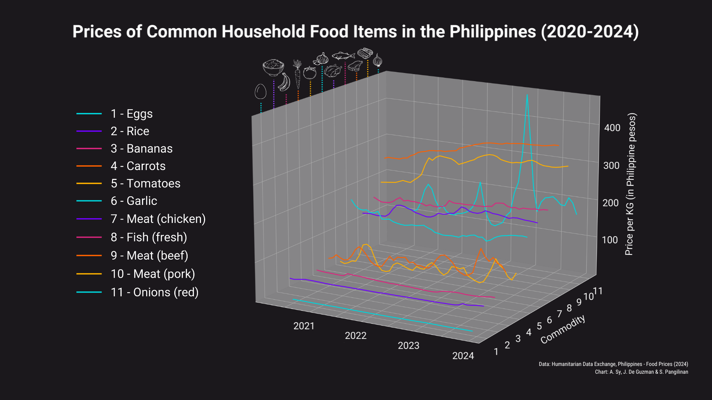
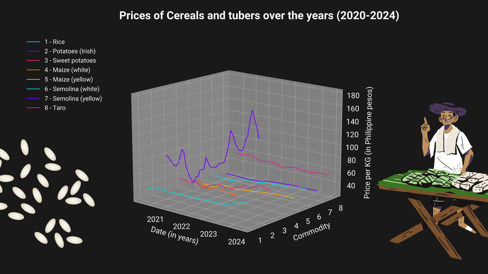
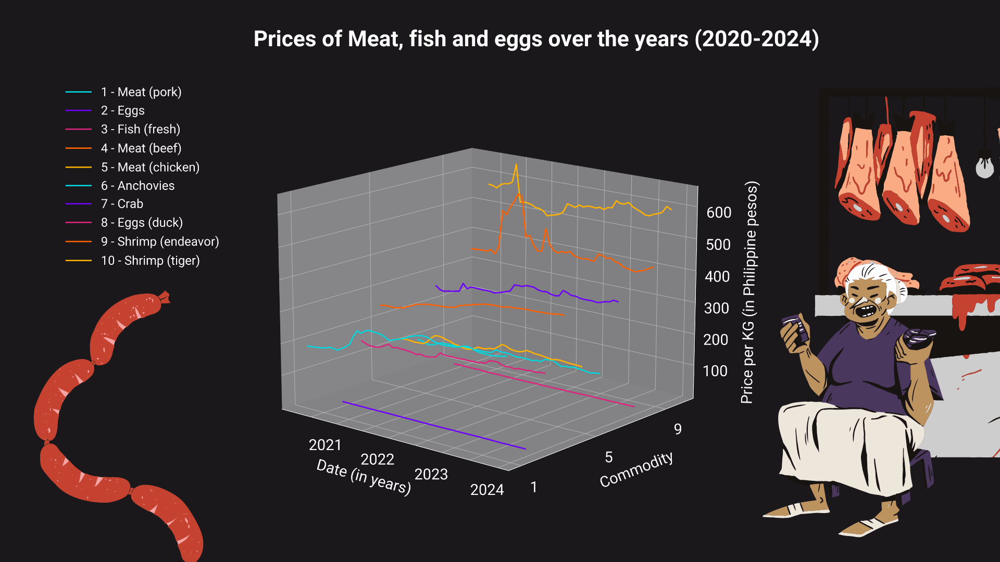
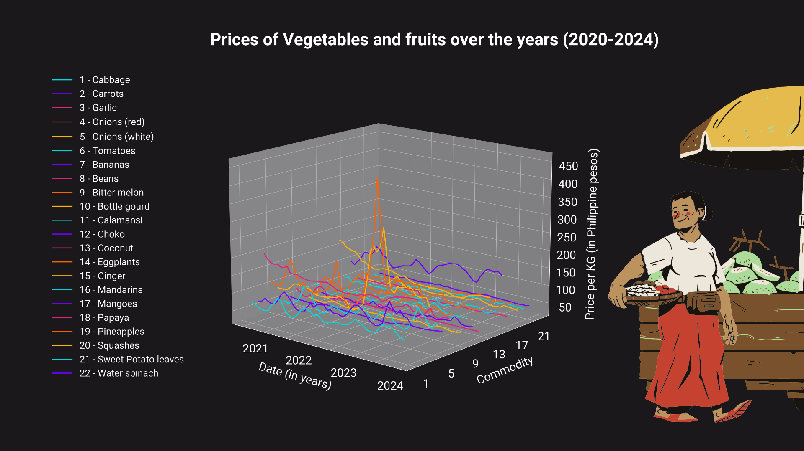
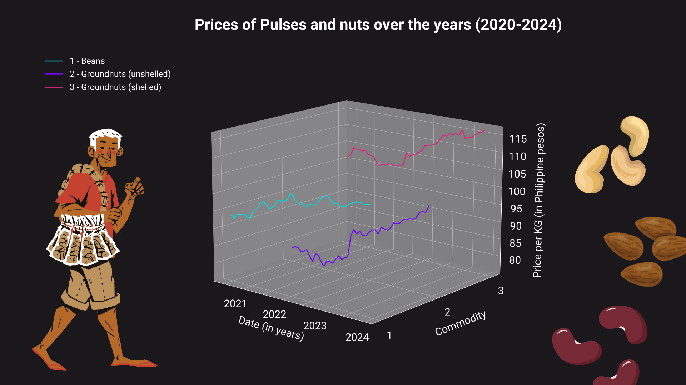
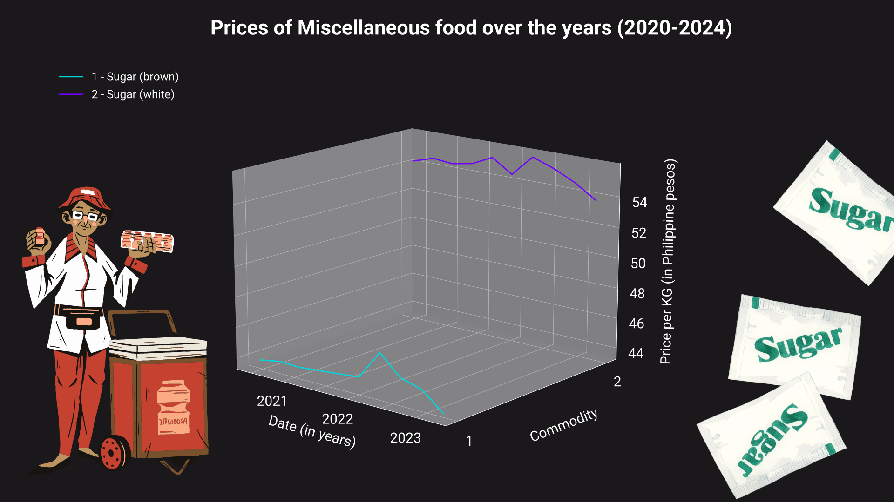
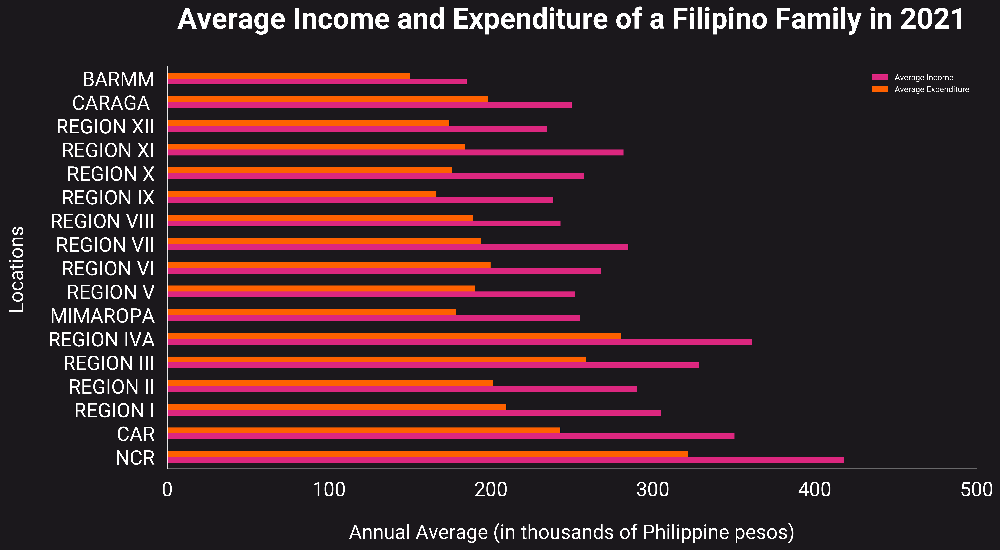
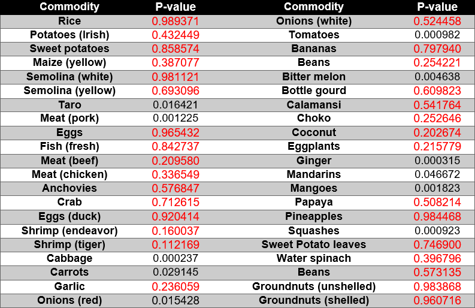

Nutshell Plot
In October of 2023, Inquirer published an article titled, Food prices seen to rise until 2024, detailing an interview with Agricultural economist Geny Lapina on the potential rise in price of food items in 2024. He stated that international conflict, climate change, export restrictions in other countries, and high fuel prices are just some of the many factors contributing to these changes (Corrales, 2023). In the past few years as well, food prices have not always been consistent. This plot illustrates the prices of several food items commonly found in a Filipino household over the years 2020 to 2024, with information sourced from the World Food Programme (WFP) Price Database. This is depicted using a 3D line graph, with each line displaying the trend in price of a specific food item over time. A number are seen to be maintaining a relatively consistent price range (Eggs, Rice, Bananas, Chicken, Fish), while others frequently rise and fall in price (Carrots, Tomatoes, Red Onions). A few are also seen to be gradually rising in price (Beef, Pork) or gradually lowering in price (Garlic).
Graphs for Research Question 1: Which common household food items saw the highest rate of change or variation in prices over the years?
    Graph for Research Question 2: Is the average Filipino household able to afford the increased food prices?
Hypothesis Testing Results (Augmented Dickey-Fuller Test on Food Prices)
As the data is formatted as a time-series, we chose to analyze it with an Augmented Dickey-Fuller Test for stationarity - this refers to the property of a time series in which it exhibits no trends and has a consistent variance and autocorrelation structure over time. This falls in line with our own objectives and hypothesis in this study: to determine if there are time-related trends in food prices in the Philippines. When the p-value is greater than the specified significance level, we fail to reject the null hypothesis, meaning the time series for a commodity is non-stationary, and has exhibited certain trends.
As seen in the table below, a majority of commodities have p-values greater than 0.05, so we can say with 95% confidence that these commodities are non-stationary.
P-values for ADF Tests for each Commodity
*Similar data for a specific commodity is averaged (e.g., different types of rice, different types of fish, different types of banana, etc.)
*Commodities highlighted in red have non-stationary time-series.